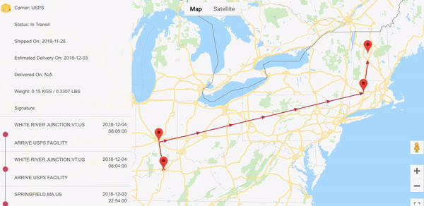

Following a phone case

The order is placed⌗
On CyberMonday I ordered one of those custom-printed phone case thingies because Google ran a hard sell. Can’t wait!
Hmmm . . . looks like it shipped. Lemme check the status.

Holy hell, it’s a map! It shows where my phone case is!
Looks like it’s currently in . . . Shenzhen! Sweet! This is already a clearer window into the supply chain than what I’m accustomed to . . .

Oh man, it must be at one of those massive factories I’ve been obliquely-misinformed about since I was 5. Let’s take a look.

Hmmm . . . seems like a huge building, but it’s closer to the city center than I’d expect. let’s see what it looks like on a satellite view.
[Whoa - that state-imposed offset is no joke.]
But that building looks suspiciously Hall-of-the-People-ish.
Okay, let’s check streetview to see this factor- OH MY GOD IT’S THE FRIGGIN’ ‘NAUVOO’ FROM ‘THE EXPANSE’.
Takes a deep breath
Actually I see this is indeed the “Shenzhen People’s Government”
I don’t think this is the factory. I think it’s what the Google Maps API considers the “default” geocode for Shenzhen, and no address of the factory was provided to the part of the package-tracking app that faces me.
But man, now I want to know more about Shenzhen.
Side trip to Shenzhen⌗
As a dumbass American, I know f***-all about China in general, and Shenzhen in particular, but I harbor a fascination about where so much of my “stuff” comes from.
So lemme dig into this a bit.
Shenzhen is the beat of a great many journalists, and Matt Rivers from CNN has a good starting point.
Overview:
- Population in 1980: 40k
- Population in 2018: 12 Million üò≤
(Cause: Deng Xiaoping’s economic reforms, among others)
Shenzhen is home to many of China’s (and the world’s) titans of tech: Tencent, ZTE, Huawei . . . and of course, Foxconn. This last company may be known to Americans as “That place that probably made your iPhone where they put up nets to stop overstressed workers throwing themselves off balconies, and where Mike Daisey decided to push the boundary between journalism and ‘making s*** up’.”
Google has modest offices in Shenzhen too, but that wouldn’t be where my phone case was manufactured, any more than the People’s Government complex would have been. Instead, it probably would have been in a place like this manufacturing district North of the city center, where (if dubiously-curated map labels are to be believed) Foxconn has its primary facility . .
. . . and where - I s*** you not - there are precisely 0 Streetview shots or geotagged photos within a mile or so radius.
So maybe Google - currently in the political weeds in China - isn’t the best source of a ground-level view of where my phone case was made. Let’s try Baidu. Aaaaaand . . . let’s enjoy this attempt of mine to navigate an obvious ripoff of the Google Maps UI, using only geographic cues because I have absolutely no knowledge of Chinese characters.
Lets see if Baidu has to adhere to the same precision degradation of satellite imagery as foreign map providers . . . NOPE. Spot-on.
I bet the Baidu “Total View” is also in better shape here . . .
Yep.
This part of Shenzhen is basically all-Foxconn, as far as the eye can see, but I suppose it’s not a bad answer to “What is it like where my phone case comes from?”
I don’t mean to suggest that a corporate behemoth like Baidu is like the friendly guy on the corner who gives you detailed directions and recommends a good teahouse . . . but maybe local knowledge is better when running down a whim of curiosity in unfamiliar territory. A harder class of question to answer is what I’m really after here: questions about the people who live and work here. Like
“What did the worker who QA’d my phone case do for fun last weekend? [Did she even have a day off?]”
And not to harp too much on Mike Daisey (his transgressions now seem quaint in the era of a president who capital-L-Lies on the daily), but his “Heart of Darkness” approach to talking about tech in Shenzhen is both odious and relatable. Here I am, across the planet from this place where my phone case was birthed, curious about the circumstances that surround the creation of that little bit of plastic that’ll spend so much time in my pocket. And despite the fact that I have an information bonanza available to me about Shenzhen at the stroke of a key - in English, no less - I still feel the cloak of mystery swirling back around that faraway city even moments after I stop researching it.
Maybe I should visit üòé.
The phone moves out⌗
UPDATE! OFF TO OSAKA!

UPDATE: Hello, Louisville!
Also, big shout to Google Maps’ recently-imposed and not-yet-addressed-by-the-tracking-app API requirements! I’d like to think that my aggressive package-tracking is what caused the API limit bots to notice.
I don’t want to fail to note that my phone case passed through Anchorage, probably well before today’s earthquake. But these arrows sure have the hint of a pilot approaching the airport, noticing fissures opening up in the earth, and cruising away like Cusak & co. in “2012”.
UPDATE: Swerve North to Indianapolis!
UPDATE: On Springfield! On White River Junction! On . . . hey wait, did this chain of custody already forget its brush with disaster in Anchorage? Has the memory of Osaka faded?
Was Shenzhen merely a dream?

Nashua? NO WAIT COME BACK THAT’S THE WRONG WAY.
Really going for the “Lopsided scarecrow” look here . . .
. . . but at long last, the package has entered the city limits of Burlington, VT.
The arrival⌗
Mailbox . . .
Unbox . . .

It’s glorious! And it’s a map üòÄ
. . . specifically, a map of my home region, centered on the great city of Burlington. I made it using Mapbox Studio, because Google’s default cartography for these “place cases” is uninspiring. Here’s the static image for download for all the Champlain-ers out there.
{kind=link}
This magical unsealing of what-was-last-sealed-by-the-banks-of-the-Sham-Chun-river brings me back to why I started on this thread in the first place:
Did the lineworker in Shenzhen who checked this case think for a moment about the faraway, frankly-obscure place depicted on it?
Honestly I doubt it, and can hardly blame her; Americans like me are fond of placing ourselves at the center of everyone else’s imagined worldviews. But the odd whims of a global economy have caused me to send a map of my home to the other side of the world for printing, then very slowly back to live in my pocket. I’ll keep thinking about those who saw it along the way.
Coda: better versions of this tale exist⌗
I should note that the “Humans of the global supply chain” tale has been expertly told by many able investigators at this point, notably Alex Blumberg back when he was at Planet Money.
I should also note that Vince Staples already dunked hard on the genre of StreetView-curiosity-tourism I’m practicing here, and it’s glorious.